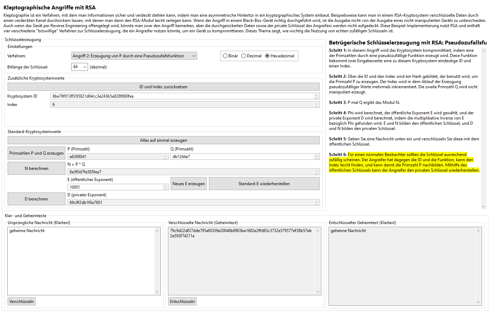

Um die Feststellbarkeit des festen-P-Angriffs zu überwinden, haben die Autoren des Buches [YY04] in Absatz 11.2.2 vorgeschlagen, dass die Primzahl P vielleicht besser durch pseudozufällige Werte erzeugt werden sollte, die auf einem geheimen Startwert ("Seed") basieren, der nur dem Kryptosystem und dem Angreifer bekannt ist. Die Idee ist, dass jedes infizierte Gerät eine eindeutige, 160-Bit ID und einen auf null initialisierten Zähler hat. Jedes Mal, wenn ein Schlüssel erzeugt wird, wird aus der ID und dem Zähler ein Hashwert gebildet, der als Startwert bei der Erzeugung von P benutzt wird. Das Ergebnis wird zufällig aussehen, die Moduli werden keinen gemeinsamen Nenner größer als eins haben, und der Angreifer muss bloß die IDs und Zähler im Auge behalten und die gleichen Funktionen benutzen, um den privaten Schlüssel nachbilden zu können.
Die Sache hat einen Haken: Falls es gelingt, die Implementierung per Reverse Engineerung offenzulegen oder die Black Box zu eröffnen, wird man die ID im Datenspeicher unmittelbar finden, und durch Veränderung dieses Wertes kann man jeden Wert nachrechnen, den die Implementierung je ergeben hat bzw. ergeben wird. Obwohl das Gerät für normale Benutzer immer noch sicher scheint, wird es für diesen Beobachter (und jeden anderen Beobachter mit den gleichen Fähigkeiten) völlig kompromittiert.
Die Implementierung der pseudozufälligen Funktion-Angriff in diesem Plug-in nutzt MD5, um über die ID und den Zähler einen Hashwert zu bilden, die als Startwert benutzt wird. Um die Zufälligkeit und Sicherheit dieser Implementierung weiter zu verbessern, wird dieser Startwert schrittweise mithilfe von mehreren Hashwerten gebildet. In jedem Fall wird das niedrigstwertige Byte des Hashwertes gespeichert und der Zähler inkrementiert, um für den nächsten Hashwert vorzubereiten. Nachdem sechs Bytes auf diese Weise erzeugt wurde, werden diese kombiniert, um einen Startwert für die normale Java Random-Klasse zu erzeugen, der dann benutzt wird, die Primzahl P zu erzeugen. Die zweite Primzahl Q und alle anderen kryptografischen Zahlen werden normal erzeugt. (Man darf den Wert von Q wählen oder das Gerät den Wert wählen lassen.)
Die Benutzeroberfläche soll ähnlich wie bei der nicht manipulierten Schlüsselerzeugung aussehen, mit Ausnahme des Buttons "ID und Index zurücksetzen" und den entsprechenden Textfeldern. Bevor die Primzahlen erzeugt werden können, müssen diese Werte initialisiert werden, aber danach während der Simulation des Arbeitsablaufs eines bestimmten Geräts darf es einfach so gelassen werden. Zurücksetzung der ID und des Indexes simuliert effektiv den Arbeitsablauf eines anderen infizierten Geräts.

Es gibt keine Simulation der Perspektive des Angreifers für diesen Angriff, denn die Reihenfolge wäre fast genau dieselbe, die das Gerät selbst durchführte: Der Angreifer würde die gleiche ID und den gleichen Index als Eingabe zu der gleichen Hashfunktion nutzen, um den gleichen Startwert für die gleiche pseudozufällige Funktion zu erzeugen, um die gleiche Primzahl P zu erzeugen. Weil das Modulus N ein Teil des öffentlichen Schlüssels ist, kann die zweite Primzahl Q mittels Division von N durch P gefunden werden, und der private Exponent D kann mithilfe des öffentlichen Exponenten E berechnet werden.
Klicken Sie hier, um zurück zum Kleptographie-Index zu gehen, oder hier, um zur nächsten Seite (Erzeugung von P durch einen Pseudozufallsgenerator) zu gehen.
[YY04] A. Young, M. Yung, Malicious Cryptography: Exposing Cryptovirology, John Wiley & Sons, 2004.